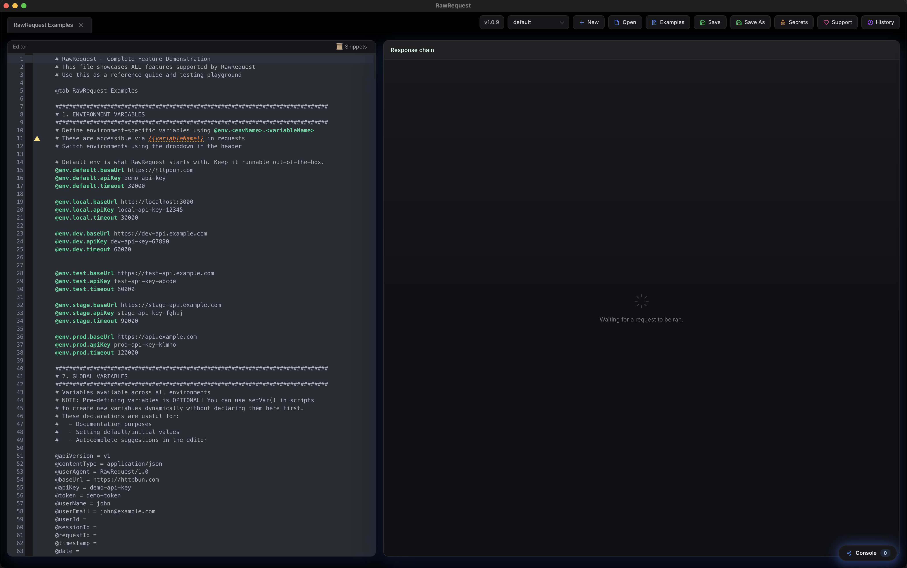
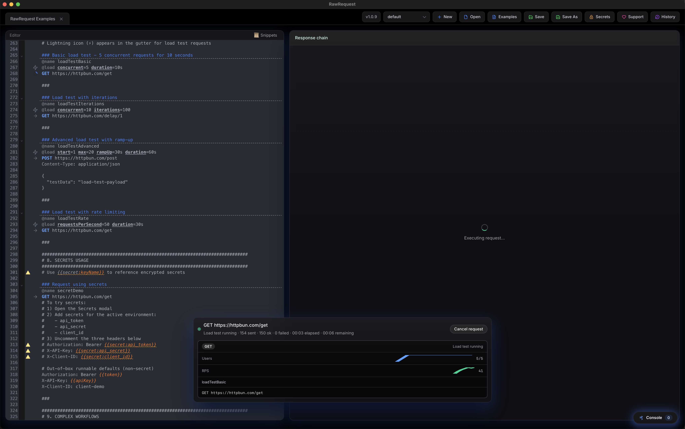
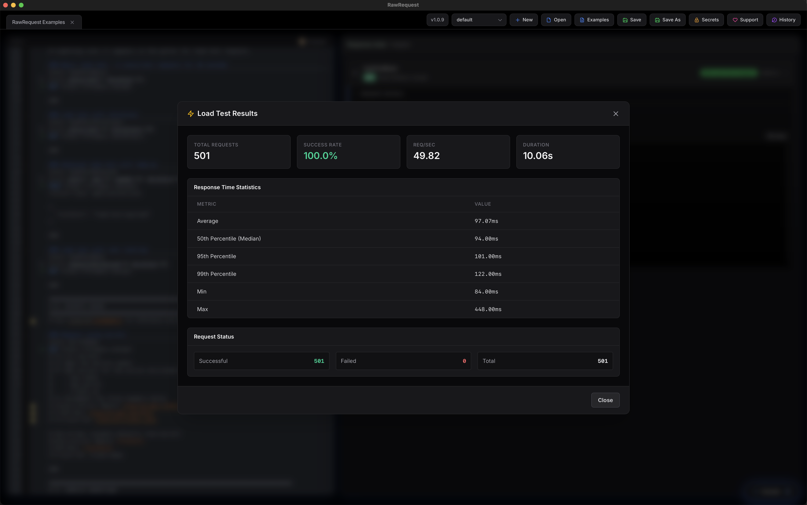

Desktop HTTP client
Code-first requests, on desktop.
Run .http files with envs, secrets, JavaScript scripts, and built-in load testing. Use the GUI, CLI, or let an AI drive it via MCP.
# Environments
@env.dev.baseUrl = http://localhost:3000
@env.prod.baseUrl = https://api.example.com
# Globals (optional)
@contentType = application/json
### Login
@name login
@timeout 15000
POST {{baseUrl}}/auth/login
Content-Type: {{contentType}}
{
"email": "dev@rawrequest.dev",
"password": "{{secret:password}}"
}
> {
assert(response.status === 200, `Expected 200, got ${response.status}`);
setVar('token', response.json.token);
}
### Get Profile
@depends login
GET {{baseUrl}}/profile
Authorization: Bearer {{token}}
Accept: application/json
Screenshots
A quick look at the editor, load testing, and results.



Features
Practical tooling for day-to-day API work.
Code-first editor
CodeMirror 6 with syntax highlighting, folding, linting, variable diagnostics, and viewport-optimized performance for large files.
Request navigation
Outline panel (⌘⇧O) to browse and filter requests. Command palette (⌘P) for fuzzy search to jump to any request instantly.
Built-in load testing
Turn a request into a load test with @load. Configure duration, users, ramp-up, and target RPS. Watch progress and get percentile breakdowns.
Secrets manager
Encrypted vault with {{secret:key}} placeholders. Sortable table with usage tracking, shared pool across environments, and optional master password to reveal values.
Scripts & chaining
JavaScript pre/post scripts with setVar, assert, and console.log. Chain requests via @depends and reference prior responses.
Environments
Define variables per environment with @env.dev.baseUrl syntax. Switch between dev, staging, and production with a single click.
OAuth2 support
Automatic token management with @auth oauth2. Configure grant type, client credentials, and scopes per request.
CLI mode
Run named requests from the terminal with rawrequest run. JSON, body, or quiet output. Secrets resolve automatically.
MCP server
Let AI assistants (GitHub Copilot, Claude) discover and execute requests from .http files via chat. One config, all projects.
Portable history
History and responses live beside your .http file. Predictable, reviewable, and easy to share or version control.
Workflow
Keep requests in text, keep outputs nearby, and make changes you can review.
Author .http files
Use ### separators, env placeholders, and scripts. Run any request instantly.
Wire secrets + envs
Use the vault + per-environment vars; lint catches missing placeholders before you hit send.
Keep history nearby
Responses and history sit beside your file (or your run location for unsaved work) so it’s easy to inspect and share.
MCP Server
Let AI assistants discover and run your HTTP requests via chat.
RawRequest acts as an MCP server, giving AI assistants like GitHub Copilot, Claude, and others direct access to your .http files. Configure it once — it works across all your projects.
list_requests
Discover all requests in a file
run_request
Execute a request and get the full response
list_environments
See available environments and their variables
set_variable
Set variables for subsequent requests
Secrets resolve automatically from the same encrypted vault as the GUI. Tell the AI which file to use via copilot-instructions.md or in conversation.
{
"servers": {
"rawrequest": {
"type": "stdio",
"command": "rawrequest",
"args": ["mcp"]
}
}
}{
"mcpServers": {
"rawrequest": {
"command": "rawrequest",
"args": ["mcp"]
}
}
}Install
Grab a release, or use the macOS installer script/Homebrew.
macOS
Quick install:
curl -fsSL https://raw.githubusercontent.com/portablesheep/RawRequest/main/scripts/install.sh | bashOr Homebrew cask:
brew tap portablesheep/rawrequest https://github.com/portablesheep/homebrew-rawrequest
brew install --cask rawrequestWindows
Download RawRequest-*-windows-portable.zip, extract it, and run RawRequest.exe.
If SmartScreen warns you, choose “More info” → “Run anyway”.
CLI & MCP
Run requests from the terminal:
rawrequest run api.http -n login -e prod
rawrequest run api.http -n getData -o body | jq .
rawrequest list api.httpStart MCP server for AI assistants:
rawrequest mcp
rawrequest helpTry RawRequest
Download a release for macOS or Windows, then start from a .http file.